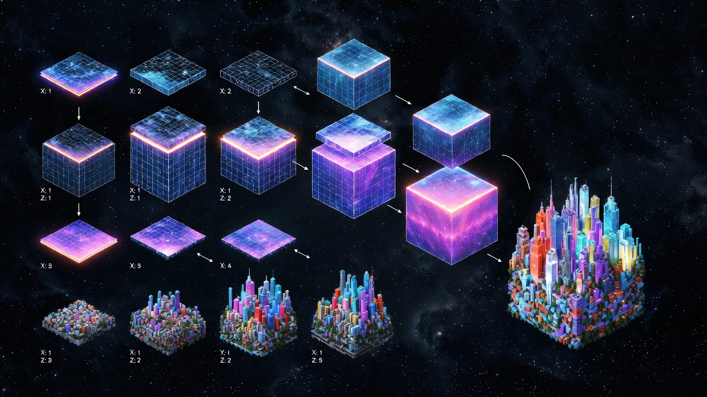
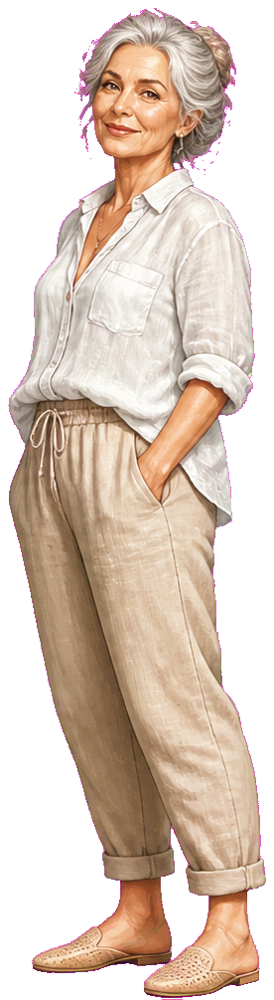

What-if studio
Seed a person.Merge a world.
Compose parallel scenes — a mind, a place, a question — then step inside. Neon grids, living presence, no costume IP.


Live compose
seed · silver / neon district
MindGuide · calm
WorldVoxel night
QuestionWhat if I stay?